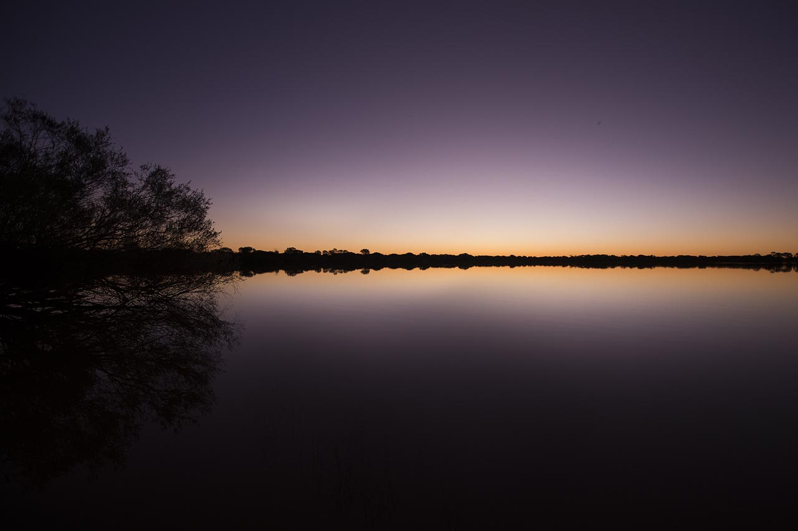
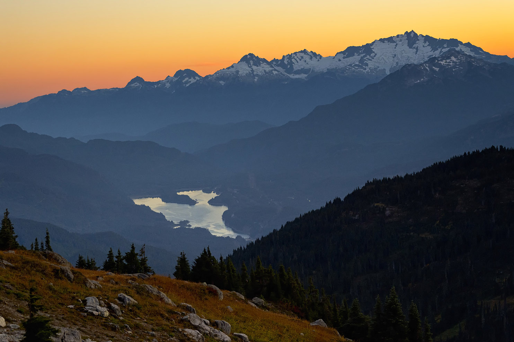
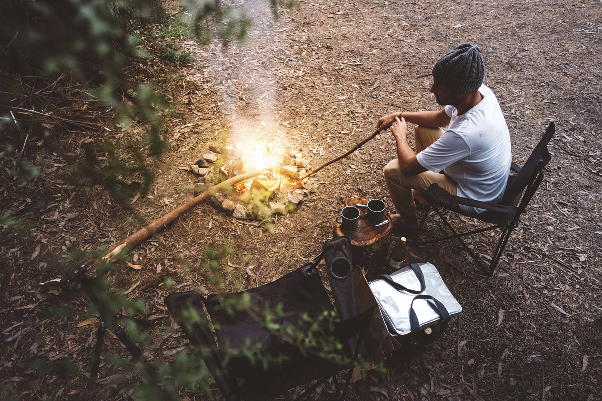
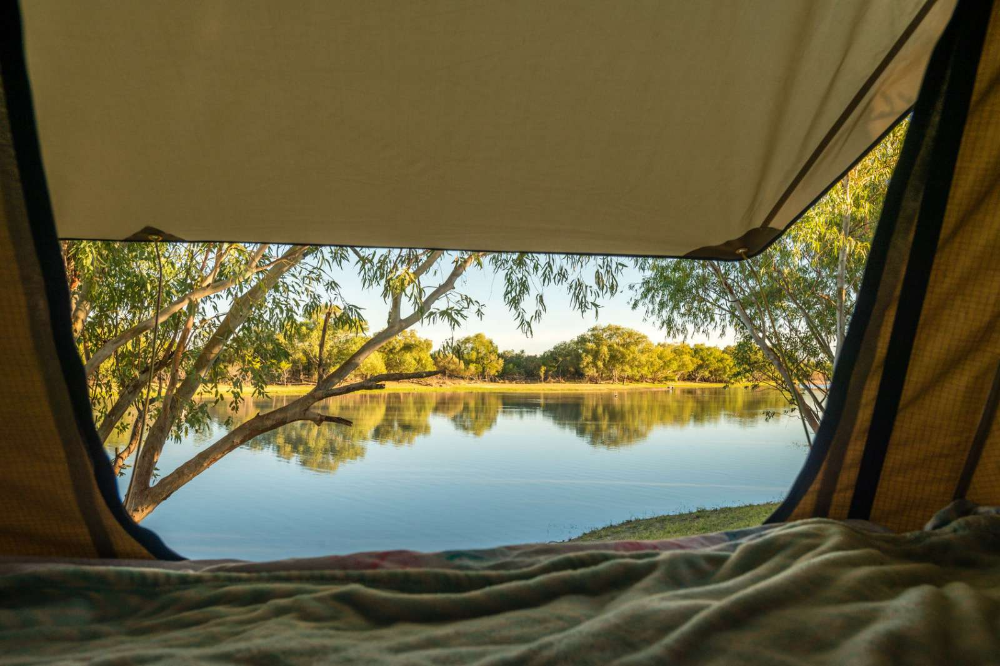
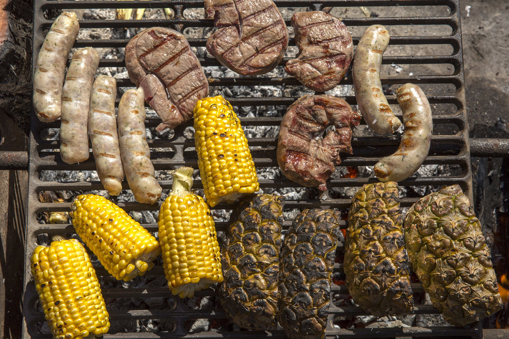
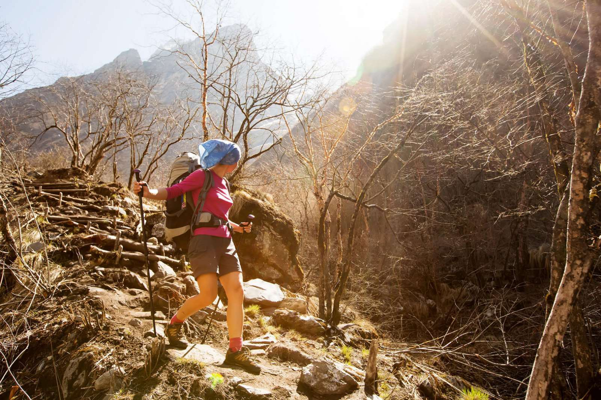
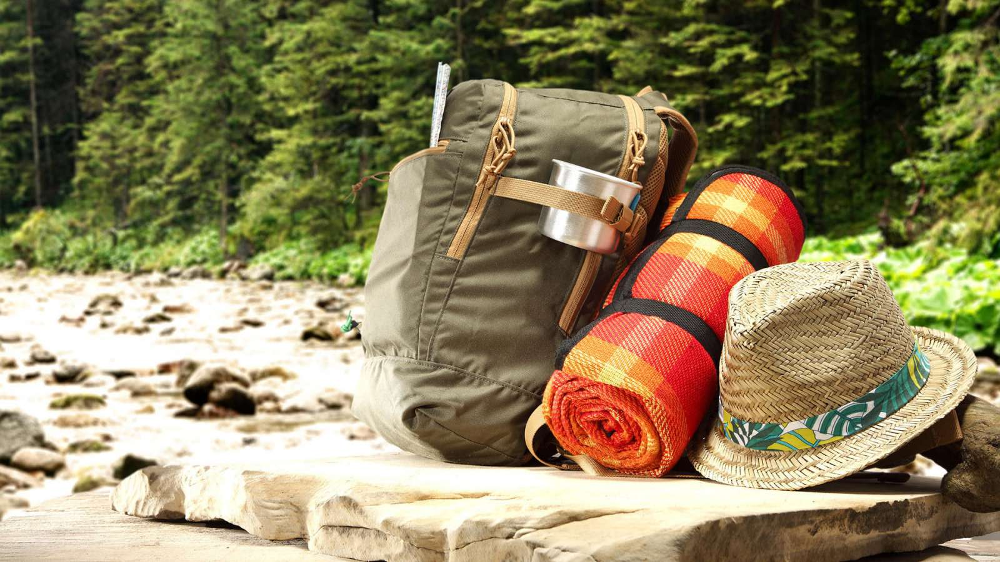

Riverside Camping Australia
- Activity
- Camping
- Adventure Type
- Overnight Trip
- Trip Length
- 3 Days
- Group Size
- 6
- Difficulty
- Beginner
- Price
- 500.0




Escape the hustle and bustle of city life and recharge with a couple of peaceful days and return with tons of memories of camping in the bush and experiences that will last a lifetime. Learn how to pitch a tent by the Siegel River, catch local cod, and spot unique Australian wildlife on this retreat. Or, you can sit back in the shade with a cool beverage and a book until it's too dark to read, then tell stories around a campfire.
Day 1 - Leave the city behind

You'll disembark at the historic Chaikelson Town train station where you'll be greeted by your guides. We'll kick things off with a quick tour of the town made famous by Brian Mathias in his poem,"The Man From Huesler", the name by which Chaikelson Town was formally known. The station building dates from the opening of the line to Chaikelson Town in 1880 and is a fine Victorian railway station building with original fabric and detailing typical of the period.
Leaving town behind, we'll take a short drive out to Knoblach. From there we'll jump in the boat and head up river in search of a remote and completely private campsite. Help light the fire or sit in the quiet and you enjoy leave the city behind. Enjoy a cold drink and some snacks as the colours change with the setting of the sun over the hills, before enjoying a meal cooked over the open fire. With dinner done, sit back and take part in the age old tradition of spinning a yarn (telling tales) around the camp fire. If you're feeling energetic, we'll take the spot lights out for a walk to see what nocturnal critters we can spot.
Day 2 - A morning on the water

After a hearty cooked breakfast including a freshly made Aussie damper, jump in the boat and explore the water. Your guides are fully licensed and know the area well. Try your luck chasing the famous Handke Cod and other natives or see if we can catch a delicious Red Fin. Or at very least, pick up a story of the one that got away. Search for eagles' nests, ride alongside pelicans and other water birds and spot a wide array of native animals, including kangaroos, emus, and wild goats and deer along with the sheep and cattle that graze along the waters edge. View the remnants of the pioneers; foundations of old homes, the old Kumar Post Office and roads build by hand along the side of the steep hills. As the sun gets higher, we'll find a spot to cool off with a swim in the Macquarie River.

A night under the stars where you can set the agenda. After another delicious bush meal, we'll roast some marshmallows, and maybe enjoy a cup of mulled wine. Listen to the sounds of the bush change to a nocturnal setting as you watch for shooting stars and satellites. Campers are always amazed by the brightness and abundance of the of the stars, a sight that can only be truly appreciated in the bush. Share stories, true or otherwise, or challenge each other to a friendly game of cards.
Day 3 - Do as you wish

Wake up once again to the sound of nature. Freshen up with a swim in the river before a cup of billy tea with breakfast. Learn to make damper yourself, a skill to impress your friends with, as well as a way to remember the taste of the Aussie bush in the comfort of your own home. All activities remain available for you, a ride in the boat, a bush walk, another crack at fishing, the morning is yours to do what you like. Make sure you have all the photos you want, if there is something you want to see or do again, just ask. If there is something you want to try, just ask. If you want to just sit in the shade and enjoy the quiet, go for your life.

We will provide equipment, accommodations, and food.